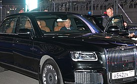

Aurus (рус. А́урус, от Au — «золото» и rus — сокращение от Russia) — семейство автомобилей представительского и высшего класса, ранее известное под проектными обозначениями «Единая модульная платформа» (далее ЕМП) и проект «Кортеж». Разработка проекта ведётся институтом «НАМИ» с 2013 года как платформа для создания автомобилей для «перевозки и сопровождения первых лиц государства, а также других лиц, подлежащих государственной охране».
